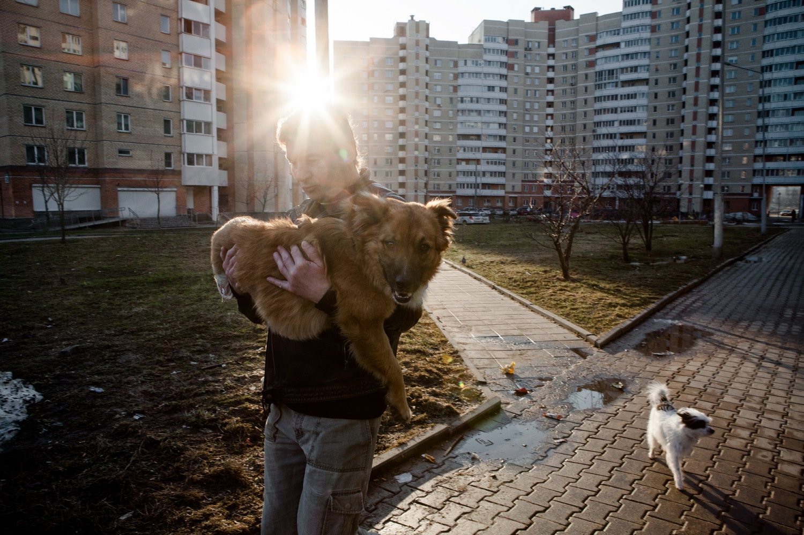
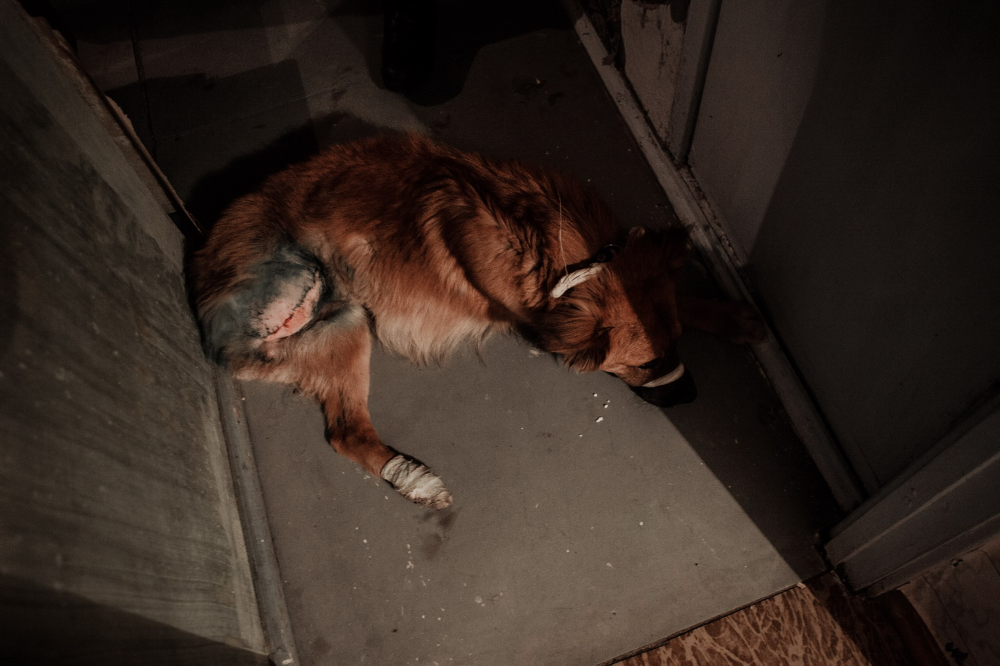
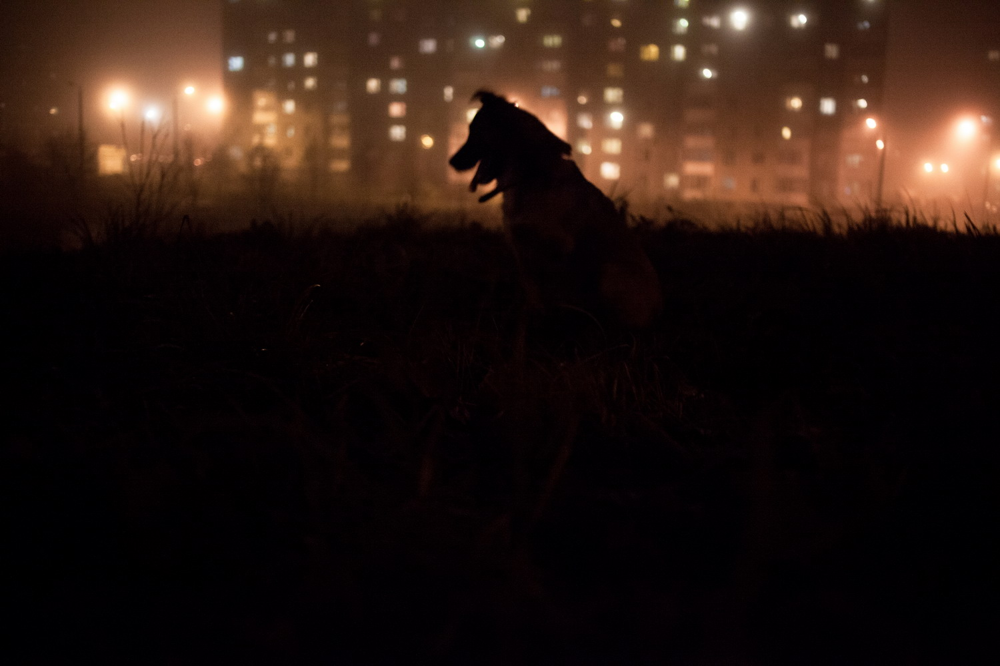
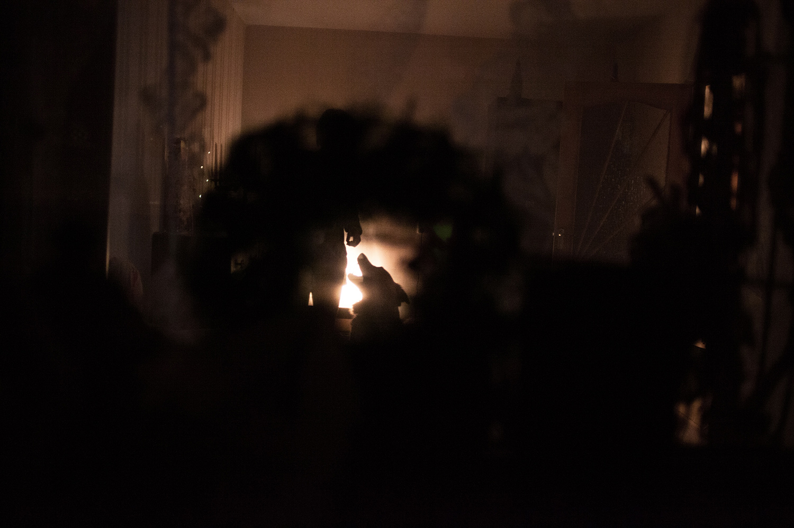

During the difficult seven-hour surgery the remains of the broken legs and the tail were removed.
June 19, 2013, Minsk.-
A friend with two paws
-
No one knows how the red male dog named Lloyd lost two legs: one front and one rear. A week later someone noticed Lloyd on the city outskirts of Minsk (Belarus) and informed animal protectors. During the difficult four-hour surgery the remains of the broken legs and the tail were removed.
I followed fate of Lloyd for half a year after the accident and witnessed things happened to him:long-term therapy, fund-collecting for food and medical treatment, moving from home to home, faced cruel reaction of society and courage of volunteers.
There are no government programs for taking care of ejected pets in Belarus, as well as population control programs. Volunteers are the only chance to rescue wounded pets from getting killed. Animals are being killed by municipal trappers literally on the city streets or, in better case - few days later in government sanitation stations. -

-

The volunteers are measuring the temperature of the dog before the injection of antibiotic. The first few days were the most difficult: the legs that underwent surgery ached, Lloyd had a high temperature.
March 23, 2013, Minsk. -

On the walk. When Lloyd tired he sat down and waited to be taken in the arms.
April 17, 2013, Minsk. -

Lloyd bravely endured injections – the snout was bandaged just to be on the safe side. The volunteers have found on the Internet the video with similar cases where dogs normally walked on two legs. It gave strength and confidence.
March 23, 2013, Minsk. -

Olya is on walk with Lloyd at the suburbs of Minsk. Reaction of society on disabled animal varied from suggesting for help to death threats.
November 22, 2013, Minsk. -

Gaining strength with each passing day, the two-legged Lloyd is becoming more self-sustained. Now he sets the tone for a walk and it’s not easy to keep up with him.
April 17, 2013, Minsk. -

-

In the morning and in the evening before the walk Olya made bandaging and disinfected wounds with chlorhexidine.
April 17th, 2013, Minsk. -

-

On x-ray it is possible to see a corrupted joints and possible tumors.
June 26th, 2013, Minsk. -

On the walk. The whip-round and search for new owners on the Internet continued.
November 22, 2013, Minsk -

Lloyd is enduring showering after the walk.
November 22, 2013, Minsk -

While looking after Lloyd, Olya and Igor got so attached to him that they decided to keep him at home. Lloyd is their second dog and he quickly made friends with the Chinese Crested dog Marley.
April 24, 2013, Minsk. -

-

Now Lloyd leads a full life, it’s just a little less convenient for him to keep the balance.
June 19, 2013, Minsk, Belarus.